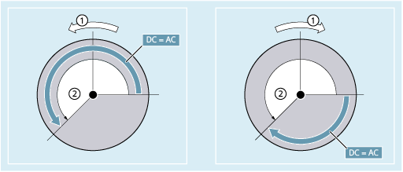

Positionieren mit SPOSA
Die Satzweiterschaltung bzw. der Programmablauf wird durch SPOSA nicht beeinflusst. Die Spindelpositionierung kann parallel zum Abarbeiten von nachfolgenden NC-Sätzen durchgeführt werden. Der Satzwechsel erfolgt, wenn alle im Satz programmierten Funktionen (außer der Spindel) ihr Satzendekriterium erreicht haben. Die Spindelpositionierung kann sich dabei über mehrere Sätze erstrecken (siehe WAITS).
| Hinweis |
|
Wird in einem nachfolgenden Satz ein Befehl gelesen, der implizit Vorlaufstopp erzeugt, so wird die Bearbeitung in diesem Satz so lange angehalten, bis alle positionierenden Spindeln stehen. |
Positionieren mit SPOS / M19
Die Satzweiterschaltung wird erst ausgeführt, wenn alle im Satz programmierten Funktionen ihr Satzendekriterium erreicht haben (z. B. alle Hilfsfunktionen von der PLC quittiert wurden, alle Achsen ihren Endpunkt erreicht haben) und die Spindel die programmierte Position erreicht hat.
Geschwindigkeit der Bewegungen:
Die Geschwindigkeit und das Verzögerungsverhalten für die Positionierung sind in Maschinendaten hinterlegt. Die projektierten Werte können durch Programmierung oder durch Synchronaktionen geändert werden, siehe:
Angabe der Spindelpositionen:
Da die Befehle G90/G91 hier nicht wirken, gelten explizit die entsprechenden Maßangaben wie z. B. AC, IC, DC, ACN, ACP. Ohne Angaben wird automatisch wie bei der DC-Angabe verfahren.
Spindelbewegungen synchronisieren mit WAITS
Mit WAITS kann im NC-Programm eine Stelle gekennzeichnet werden, an der solange gewartet wird, bis eine oder mehrere in einem früheren NC-Satz unter SPOSA programmierte Spindeln ihre Position erreicht haben.
| Programmcode | Kommentar |
|---|---|
| N10 SPOSA[2]=180 SPOSA[3]=0 | |
| ... | |
| N40 WAITS(2,3) | ; Im Satz wird so lange gewartet, bis Spindeln 2 und 3 die in Satz N10 angegebenen Positionen erreicht haben. |
Nach M5 kann mit WAITS darauf gewartet werden, dass die Spindel(n) zum Stillstand gekommen ist/sind. Nach M3/M4 kann mit WAITS darauf gewartet werden, dass die Spindel(n) die vorgegebene Drehzahl/Drehrichtung erreicht hat/haben.
| Hinweis |
Ist die Spindel noch nicht mit Synchronmarken synchronisiert, dann wird die positive Drehrichtung aus dem Maschinendatum entnommen (Auslieferungszustand). |
Spindel aus der Drehung (M3/M4) positionieren
Bei eingeschaltetem M3 oder M4 kommt die Spindel auf dem programmierten Wert zum Stillstand.
① | Drehrichtung |
② | Programmierter Winkel |
Zwischen DC- und AC-Angabe besteht kein Unterschied. In beiden Fällen wird in der durch M3/M4 gewählten Drehrichtung bis zur absoluten Endposition weitergedreht. Bei ACN und ACP wird ggf. gebremst und die entsprechende Anfahrrichtung eingehalten. Bei der IC-Angabe wird, ausgehend von der aktuellen Spindelposition, um den angegebenen Wert weitergedreht.
Spindel aus dem Stillstand (M5) positionieren
Der programmierte Weg wird aus dem Stillstand (M5) den Vorgaben entsprechend exakt abgefahren.